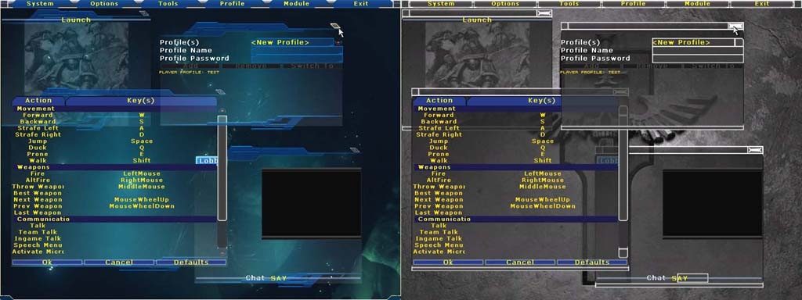

Solid Snake/Chaos Engine
Chaos Engine (Outdated information)
This page is the hub from where all of my code source is defined and information on how to use it is available here. I often do not leave any comments/logs/debugging code in my final code as I usually tend to optimize as much of the code as I can for 'final' release, or at least to the extent of what I believe is a final release.
Code Developer Network
ceEngine
This package contains most of the 'guts' of the Chaos Engine platform. This is the package which handles most of the basic functionality of the platform such as weapons, inventory, players, classes that a game would be comprised of.
ceInterface
This package handles all of the interface code in the Chaos Engine platform. All GUI base code is located in this package.
Features
- Module System : Chaos Engine mods are called modules. Modules are able to:
- alter the graphical appearnace of the user interface, including the console.
- have separate player profiles.
- have their own key binds.
- append onto other modules. (e.g to create an expanded universe of an existing universe)

The one of the left shows the bundled Unreal module, while the one on the right shows the default module (The Unreal module is still incomplete). |
- Player Profile System : The player profile system is designed to:
- Make this mod playable at net cafes.
- Make this mod playable on a computer that has multiple users.
- Allow modules to have their own special key binds, which only appear when the module is activated.
- Allow easy switching between profiles for miscellaneous reasons. (e.g Different keybinds for different character classes)
- Console System : The console is now extended in Chaos Engine and supports:
- Auto-completion of both standard console commands and module specific console commands.
- Console command search of both console commands and module specific console commands.
- Console commands are now routed through the activated module, thus modules can rewrite new static functions activated by a console command, or disable it.
- File Management System : An integrated file management system is available to use within Chaos Engine. This class allows easy access to DataObjects saved in a package to store data for a module. Almost any kind of data can be saved/loaded and is used for a wide range of reasons. Using this class makes it easier to retrieve specific data, as well as general file managing tasks such as creating new packages, deleting and modifying existing packages.
Comments
Solid Snake: The reason why I setup the wiki stuff about Chaos Engine this way was because Chaos Engine is a platform designed to be released to help other modders develop a top down RPG game without having to write much base engine code such as handling of character data, character experience handling, weapon handling, inventory handling, UI handling and other hosts of functionality. Anyways, because this isn't so plug and play and that systems inherently depend on each other to work it isn't appropriate to mingle with the other existing class definitions. Well thats my opinion anyways...